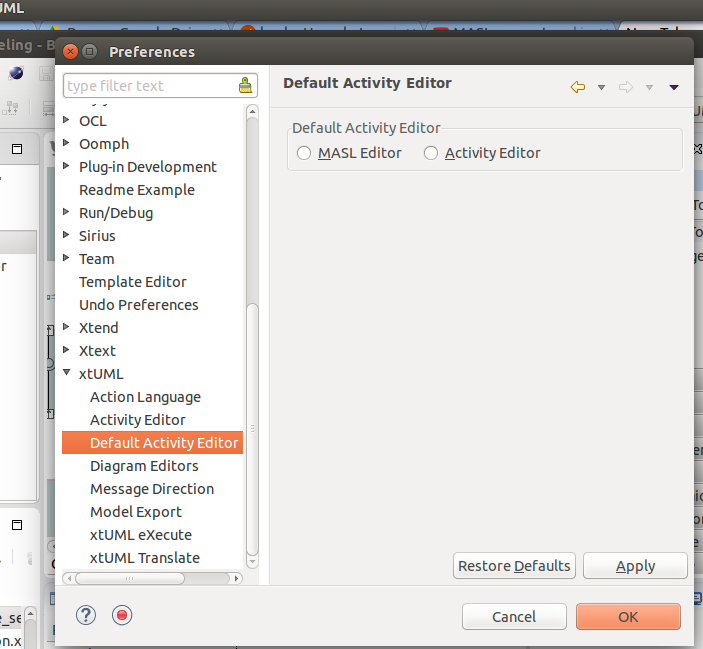

Figure 1
BridgePoint xtUML is designed to support the executable, translatable UML (xtUML) approach
to the Shlaer-Mellor methodology for Model-Driven Architecture (MDA). However, xtUML is not
the only language to have its roots in this MDA approach. MASL is another dialect that has
evolved from the Shlaer-Mellor methodology and developed a community of users. Now this common
ancestry offers modelers in either community the potential to move models between the two
dialects. BridgePoint xtUML is an editing and execution platform for xtUML modelers. With the
addition of conversion tools, extensions to import/export facilities and a MASL-aware editor,
BridgePoint xtUML is a powerful platform for MASL modelers to advance their work and employ
MASL downstream tools. When moving MASL models into xtUML, an idiom must be followed. This
document details that idiom and the extensions to the platform that make working with MASL
inside BridgePoint xtUML possible.
In this document terms preceded by MASL are as defined in the MASL Reference Manual unless
otherwise clarified below.
| Term | Description |
|---|---|
| eclipse workspace | Implemented as a folder in the filesystem, a workspace can hold any number of xtUML projects. |
| eclipse project, xtUML project | Implemented as a folder in the filesystem, a project can hold any number of xtUML model elements. |
| domain component | An xtUML component representing a MASL domain |
| domain package | An xtUML package containing everything associated with a particular MASL domain, including the domain component for the domain |
| project component | A project-specific xtUML component representing the bridge mappings for the project |
| project package | An xtUML package representing a MASL project |
| shared type | A type used outside a MASL domain, including one used within two or more MASL domains as well as any used on terminator services |
| eclipse View | A graphical presentation of project information |
| eclipse perspective | A collection of Views that provide a consistent presentation of the project information along with tools to manipulate the model |
When describing procedures that involve BridgePoint menus or xtUML model element selections, the
following notation is used:
| Action | Meaning |
|---|---|
| <RMB> | Right-Mouse Button |
| <click> | Select using left-mouse button |
| <dbl-click> | Two rapid <click>s |
| <Text-in-bold> | A menu selection |
| <Text-in-bold> > | A sequence of progressive menu selections |
To ensure that MASL models with its usage of bridging components are accurately represented
in xtUML, a set of recommendations and restrictions must be followed. Collectively these form
the MASL-xtUML idiom and are the foundation for model representation and error-free MASL export
with BridgePoint xtUML.
Since MASL and xtUML are based on the Shlaer-Mellor Method, the two languages are similar at the
core. Consequently, most mappings between constructs in the two languages are straightforward
(e.g., MASL Object maps to xtUML Class) and are therefore not detailed here. However, each
language has been extended differently leading to some mappings that are less obvious, and these
are explained in the sections below.
The idiom addresses three areas of concern: bridge technologies between domains, model packaging
to maintain visibility, and Type mapping. By following the practices outlined in the MASL-xtUML
idiom, models that start as MASL can be converted to xtUML, modified inside the xtUML Editor and
exported back as MASL for processing by downstream tools.
Systems are typically constructed by connecting multiple MASL domains or xtUML components using
some form of bridging technology. Where MASL employs terminators and public services, xtUML uses
interfaces consisting of interface operations and ports. The basic mappings between MASL
and xtUML are simple: a service declared on a terminator corresponds to an interface operation on
a port with a required interface while a public service surfaced by a MASL domain is rendered as
a function invoked by a port activity in a provided interface.
However, MASL bridging provides flexibility in the way MASL domains can communicate. For example,
a MASL domain may use a subset of the services surfaced by another MASL domain, and it may choose
to refer to those services by names different than the MASL domain providing them. Also, a forking
bridge allows a MASL domain to view as a single service two or more services provided by any number
of MASL domains.
Since xtUML provides bridging based on a single definition for each interface, it is necessary to
introduce a bridging component into the MASL system that replicates MASL’s flexibility. The idiom
illustrated below offers the same level of domain isolation in xtUML that the MASL approach affords.
Figure 1
In Figure 1, magenta rectangles are references to reusable domain components while the green rectangle
is a project component that implements the project-specific bridge requirements.
Each component representing a MASL domain sprouts a single provided interface containing an interface
operation for each public service surfaced by the MASL domain as declared in the MASL domain interface
file. This provided interface covers all incoming interface operations for the domain component, and
the complementary interface is always located on the project component.
A special naming convention must be followed when creating a MASL Project component (in Figure 1 the
green component) from scratch. After the provided interface is formalized, the port must be renamed
from its default name (e.g. "Port1") to <domain>__<terminator> with the double-underscore
separating the domain and terminator names.
To create a deferred operation, create an operation with an identical signature in each subtype
class. Then use the Properties view to set the dialect of the supertype class' operation to
"None". Each subtype class' operation dialect is set to "MASL".
MASL domain functions are modeled in BridgePoint as a function inside a component and
a matching operation in a provided interface on the component boundary. See clear() and
key() of the calc domain in Figure 2. By convention, the port name of this provided
interface is renamed by the modeler to match the component (domain) name. The Publish to interface...
tool is available on the context menu of functions shown in Model Explorer. This tool helps
the user keep the interface operations in synch with changes made to the signatures of the
domain functions. If there is a domain function without a matching provided operation, it
represents a private domain service in MASL.
MASL terminators and terminator services are modeled in BridgePoint as a required interface
implementing interface operations on the component boundary. See the "disp" terminator and the
error() and result() terminator services in Figure 2.
The dialect property of the functions and terminator services are important.
For a MASL Domain, all provided operations and domain functions should have dialect "None"
and required operations (i.e. terminator services) should have dialect "MASL". For a
MASL Project it is the opposite, all provided operations should have dialect "MASL",
and required operations have dialect "None". For MASL Domains and MASL Projects
that are converted and imported the dialect properties are configured automatically.

Figure 2
There are some situations when the editor must distinguish between a MASL
domain and MASL project. Because domains are where the majority of the work
will take place, no special annotation is needed. For MASL projects however,
the description field of the package that contains a project component must
contain the string "masl_project". This value must be set before the package
is populated with a Component (MASL Project) and Component References (MASL Domains).
Under xtUML, model elements defined within one component have no knowledge or visibility of model
elements (including types) defined within another component. This is different from MASL where public
types defined within a MASL domain can be accessed by other MASL domains using a qualified name of the
form: otherDomainName::someType. Consequently, upon conversion to xtUML, if each MASL domain
is packaged within a component, this access is lost, and types defined within that MASL domain become
invisible to other components of the system. Consequently, provisions in the organization of the
model are needed to maintain system-wide visibility. Accordingly, all shared types, including those
used on terminator services, must be packaged outside domain components. Similar visibility restrictions
exist for xtUML interface definitions, and the solution is for all xtUML interface definitions exposed
by the domain component to be packaged outside the domain component representing the MASL domain.
To address these differences in scoping of types and interface definitions, the following packaging
conventions are recommended. Each MASL domain converted to an xtUML model contains a single top-level
domain package which then contains:
To support system-side visibility, BridgePoint’s support for inter-project references (IPR) is
leveraged. The xtUML Project in a workspace that is a MASL Project will enable IPRs and thus will gain
access to the components and types shared by other (MASL Domain) projects in the workspace.

Figure 3
A typical xtUML project using this approach is illustrated in Figure 3. Note that all shared types
defined in the MASL domain are contained within the Shared package associated with that MASL domain,
and these type definitions are not included in the component representing the MASL domain. With
BridgePoint xtUML, the conversion facility produces a single xtUML model file adhering to the
packaging and naming scheme illustrated. Modelers are free to repackage and rename their models as
they see fit, so long as these two conditions are met:
Types that a domain intends to make public to the outside world should be created in
the "Shared" package that is a sibling to the component (domain). The "Shared" package
also includes the interfaces that are mapped to MASL domain functions and terminator
services.
Types that a domain intends to keep private from the outside world should be created in
a package underneath the component (domain).
For xtUML models, packaged in this way, the export facility produces a MASL domain interface file (.int)
that includes the shared types residing in the package associated with the MASL Domain.
The MASL type system does not align perfectly with that of xtUML. So during import, no MASL types
are mapped to xtUML types, and the entire MASL type system is adopted into the xtUML Editor. These
MASL core types are stored in the types package of a converted and imported model. While
editing the model in BridgePoint, the MASL activities can be freely edited and parameters and
attributes can be typed with these MASL types.
In xtUML typing is established through a link between the model element being typed and a particular
instance of a type. However, MASL treats a type reference as a first class concept which makes typing
a model element in MASL slightly more complex than it is with xtUML. This is because a type reference
in MASL can further constrain the type that is applied to the affected model element. Since variable
declarations exist only within activities expressed in MASL, these references do not receive special
handling and are kept with the MASL code block.
Type references must be used to add constraints to types, use collection types, or instance types.
To use these types, create a new public type and enter the full type reference as the type name. For
example, a type named "sequence of integer" could be used to type an element which is a sequence of
the type "integer".
MASL allows modelers to constrain sequence types with a max size. Due to limitations in the tool,
only integer literals are allowed to be used to constrain sequences when the type is used to type an
activity parameter or a return type. If the type is used to type a local variable, an attribute, or
a structure member, any constant expression of type integer can be used in a sequence constraint.
To access shared types from other domains in MASL action language, the modeler must create a dependency
to the <other domain>.int file into the local project's Dependencies project preferences.
To access shared types from the structural part of the model, the modeler must create a type reference
in the local domain. This is done by creating a new UDT in the current domain with a special name that
references the domain where the type actually lives (e.g. OtherDom::someType).
The MASL extensions added to BridgePoint xtUML involve adding MASL conversion tools, extending
the BridgePoint Import/Export facilities and adding a MASL-aware Editor. Each of these enhanced
facilities are described in the sections below.
The conversion of MASL domains and MASL projects into MASL-infused xtUML models is performed
by the tool masl2xtuml and is invoked from the command line. The conversion command
masl2xtuml has the following syntax for MASL domains:
masl2xtuml -d <directory path> -o <directory path>
and for MASL projects
masl2xtuml -p <directory path> -o <directory path>
where <directory path> is any relative or absolute directory path, -d identifies
the MASL domain, -p identifies the MASL project directory and -o identifies the
destination directory where the xtUML model file is written to. A complete reference is
included in the MASL documentation.
The MASL domains and MASL projects are processed one at a time in any order. All conversion
can be performed sequentially or each conversion can be followed by a BridgePoint model import.
However, the conversion is incomplete until all MASL domains and at least one MASL project
have been successfully processed.
Note that MASL models can be converted and imported in any order. However, before importing an
xtUML model representing a MASL project, all domains referenced by that project must first be
imported.
During the conversion from MASL to xtUML, each MASL domain is mapped to a domain component, and
each project is converted into a project package. Within a MASL domain, activity can be
associated with public services and terminators at the interface, and data processing within
the domain through operations, functions, and state machine actions. Once converted these MASL
action code blocks are kept with the associated xtUML model element, but in separate storage.
To translate a MASL model into an xtUML model inside BridgePoint involves two steps: a
conversion step and an xtUML import step. The conversion step was discussed in a previous
section and involves the tool masl2xtuml. The output from this conversion tool is a
MASL-infused xtUML model file that can be imported into an existing xtUML project using
the BridgePoint import facility. BridgePoint xtUML import can be achieved interactively
through the xtUML modeling perspective (see below).
The xtUML import step is a procedure covering three steps: create the xtUML project, enable
the use of Inter-Project References (IPRs), and finally use xtUML model import to bring
the masl2xtuml created MASL-infused xtUML model file into the xtuml project. Each of
these steps must be repeated for each MASL domain and MASL project.
It is important to recall that the MASL-xtUML idiom requires system-wide scope for some model
elements and this is facilitated in BridgePoint using Inter-Project References. For IPRs to
automatically connect referenced model elements during import, these referenced elements must
already be in the workspace. Consequently, the project package must only be imported after all
referenced domain packages have been imported. This is the only import order dependency created
by the idiom, and all MASL domain packages can be loaded in arbitrary order.
As described earlier, the MASL-xtUML idiom organizes the BridgePoint workspace based on projects,
and an xtUML project is needed for each converted domain and project. To perform each import from
inside BridgePoint, the xtUML modeling perspective is used following these steps:
The conversion of xtUML models to MASL is a single step operation that is invoked from either
the xtUML Editor perspective or a command line. The MASL Export extension consists of the
xtuml2masl conversion tool and enhancements to the BridgePoint Export facility to support
the MASL Export Domain or MASL Export Project flows.
The steps to export an xtUML model to MASL from BridgePoint start with the Model Explorer view.
Here the source xtUML project is selected by clicking on the package containing the project to
be exported as either a MASL domain or MASL project.
The conversion is activated by selecting <RMB> > Export MASL domains for a domain project
or <RMB> > Export MASL project for a MASL project. During the export process, progress is
reported in the Console view, and if errors occur an error log will appear at completion of
the operation.
To export xtUML models to MASL equivalent models without invoking the BridgePoint UI, the
xtuml2masl tool is used. This tool makes use of the environment variable WORKSPACE
which must be set to the directory path of the xtUML workspace holding the source xtUML project.
It is recommended that all xtUML projects be contained in a single workspace, however this is
not enforced by the export tool. If the complete xtUML model is contained across multiple
BridgePoint workspaces then the WORKSPACE variable must be modified between xtuml2masl
invocations.
To invoke the MASL export tool, the following syntax is used
xtuml2masl -i <eclipse project path> -d <package name> [-o <output directory> ] |
-i <eclispe project path> -p <package name> [-o <output directory> ]See the xtuml2masl reference page in BridgePoint Help for complete details. Note, if
the -o parameter is omitted, the current directory is used by default.
Once a MASL model has been imported as an xtUML project, BridgePoint extensions for MASL
are accessed through the xtUML Editor perspective. These extensions to the perspective
enable MASL-aware code editing and MASL export.
When working with xtUML and MASL inside BridgePoint, the xtUML Editor perspective is used
exclusively. This perspective consists of four primary views:
Each of these views is documented in the BridgePoint Help facility which can be accessed
through Help > Help Contents.
A popular addition to the default xtUML Editor perspective is the Navigator view which provides
easy navigation of the files and directories contained within an xtUML project. This view can
be added from within BridgePoint by selecting Window > Show View > Navigator.
Each model element has an Editor that can be opened in a number of ways, and since the xtUML
Modeling perspective is model-aware, can be opened from within Editors and views. The most
common view for navigating and opening model elements is the Model Explorer view. In this view,
model elements can be opened for editing by select the model element and either <double-click> it
or using <RMB> > Open With to choose an Editor. Once activated, a new tab will appear in the
canvas area and the contents of the model element presented inside the Editor.
Inside a MASL-infused xtUML model, there can be both MASL and OAL activities. To best support
MASL, the extensions to BridgePoint xtUML include a full featured text editor with MASL syntax
highlighting.
The editor will appear when a model element containing MASL is <dbl-click> or when using
<RMB> > Open MASL. In the Navigator view, selecting a .masl file and <dbl-click> will
open the MASL editor as well.
Initially, models developed in MASL are unlikely to contain OAL. However, as the model matures
inside BridgePoint, it is possible that new model content will be a mixture of MASL and OAL with
some model elements containing both. To Edit these MASL-infused components, select the model
element from within Model Explorer, and use <RMB> > Open With to choose either the OAL or MASL
editor options.

Figure 4
An alternative means is to set a default choice using the Default Action Language preferences (Figure 4).
The preference is located under Window > Preferences > xtUML, and after selecting the button next to
desired editor, <click> OK to close the window.
To access shared data from service domains the modeler must create a dependency to the <other domain>.int
file or a folder containing one or more <other domain>.int files in the local project's
Dependencies project preferences.
When a folder dependency is specified, all MASL *.int files directly under the folder are parsed as
part of the local project's validation process.
The MASL-xtUML idiom uses Inter-Project References (IPRs) to provide system-wide scope to some
model elements. IPRs are a mechanism for xtUML model elements defined in one xtUML project to
be used in another xtUML project. For the access to be allowed the referring project must have
IPRs enabled.
To check if IPRs are enabled for a particular xtUML project, select that project in the Model
Explorer View and then select <RMB> > Project Preferences. This will open a popup window (Figure 5),
and selecting Inter-Project References will show the setting Allow inter-project model references.
The use of IPRs is enabled if the checkbox is marked. For the models based on the MASL-xtUML idiom,
all xtUML projects containing a MASL Domain component must have this checkbox unmarked and those xtUML
projects containing a MASL Project must have this checkbox marked. For these xtUML/MASL Projects,
the preference must be set prior to importing the file created by masl2xtuml.

Figure 5
When a domain component, shared data type or shared interface is modified, all projects referencing
that model element will be marked with a warning icon on all affected model elements. There are
two approaches to resolving these warnings. For projects where the modeler is not the owner of
the referenced model element then the update must be done using the following steps to pull the
changes into the project:
In cases where the modeler is owner of both the referenced and the referring projects then the
update can be globally pushed from the referenced project to the referring projects using the
following steps:
To demonstrate the MASL extensions of BridgePoint xtUML, the GPS Watch example (Figure 6) will
be used. This model represents an exercise watch that records location, heart rate, and elapsed
time as the wearer performs a physical activity. The model is composed of four components: a
heart rate monitor, a location component, a tracking component and a user interface.

Figure 6
This model is located in the public GitHub repository at https://github.com/xtuml/models/tree/master/masl.
The local copy we will use as the starting point in this tutorial is produced from a ZIP file image
of this repository.
Tutorial in your home directorymodels-master.zip file~/Tutorial/~/Tutorial/model-master/masl/gps/ to ~/Tutorial/MASLsrc~/Tutorial/MASLsrc. In this directorymasl2xtuml tool~/Tutorial/xtUMLprj.<installation>/tools/mc/bin/masl2xtuml -p GPSWatch -o ../xtUMLprj<installation>/tools/mc/bin/masl2xtuml -d ./HeartRateMonitor -o ../xtUMLprjAt the conclusion, the xtUMLprj directory will contain five subdirectories with names matching
the five subdirectories under ~/Tutorial/MASLsrc.
The first step is to launch BridgePoint xtUML and select an eclipse workspace to hold the modeling
projects.
Having produced the individual xtUML projects, they are ready to be assembled into an xtUML
model inside BridgePoint xtUML. The model structure described in an earlier section is used
here and implemented using the following steps:
~/Tutorial/xtUMLprj/HeartRateMonitor and check mark HeartRateMonitor~/Tutorial/xtUMLprj/GPSWatch into the GPSWatchWith the model now populated inside the workspace, the various views and editors of BridgePoint
can be used to visualize, modify and export the model. Navigating around the model can be
performed from inside either the Model Explorer or Navigator views. Each view employs a tree
representation of the model and individual model elements can be located using the following steps:
Diagram editors and MASL activity editors are both accessible from Model Explorer. For MASL
activity blocks, the Navigator view can be used to launch the editor using a similar sequence
of steps:
.masl file is revealed in the tree.As mentioned previously, when a model contains MASL-infused xtUML model elements, the <dbl-click>
behavior is based on the default action language preference selection and the given dialect for an
activity.
In the tutorial model, the Tracking domain contains MASL-infused model elements and MASL code
will be added to the stopped state within the WorkoutTimer state machine. The steps to make
this change are:
public service WorkoutTimer::stopped (user_id : in integer,
groups : in sequence of string) is
begin
console << "Forced activity on workstation. " << endl << flush;
end service; Save the changes and close the editor. Repeat step 3, and this time the MASL code will appear.
The difference in selection is due to the presence of MASL action language and the selection of
MASL for Default Editor preference.
The conversion of xtUML projects into MASL domains and MASL projects is conveniently performed
from the Model Explorer view by first selecting the top package within the xtUML project.
export.log file will appear. Check the log for Errors or INFOmasl/ directory is created in the project if not present andmasl/ directory are visible in the Navigator view.